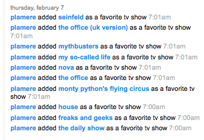

Freakomendation - ffwd
This week I received an email from ffwd where they excitedly claimed to have some new recommendations for me, including this set of channels that I should check out:
Two of these seem to be rather general: Recommendations for 'business' and 'tv show' would be like the local convenience store recommending that I might want to buy some milk and bread. However, it is the third recommendation, the 'panties' channel that caught my eye, so to speak. I didn't recall doing anything on ffwd that would trigger an 'adult' recommendation, so this particular recommendation was a puzzler. I checked out my history on ffwd to see what they know about me to see if I could figure out why they gave me this particular recommendation. It turns out, ffwd knows only a little bit about me - I rated a few shows last year:

Its just typical nerd TV - nothing that should trigger a recommendation for a tour of the nether regions. More than likely, ffwd's collaborative filtering algorithm is just not dealing with sparse data very well, causing it to make freakomendations. Unfortunately for ffwd, these aren't just bad recommendations, they are likely to be offensive to some.
Sure enough, a few days later, I had this email in my inbox:
And so it seems, I was not the only one of ffwd's users who received such an recommendation. As corporate apologies go, this is not a bad one, but I don't like this bit "Most subscribers found the suggestions useful, but if you didn't, please be patient...". This seems to imply that if I took offense, it is really my fault, not ffwd's, since most of the ffwd subscribers didn't seem to be offended. If you are going to apologize, just do it, don't waffle or weasel about it.Subject: apology from the ceo
Dear plamere,
On behalf of the ffwd team, I apologize if our recent email recommendations didn't make sense, or worse, offended you. We are testing a new channel recommendation system and may have put it into service prematurely.
Most subscribers found the suggestions useful, but if you didn't, please be patient as we work out the kinks and simply respond honestly to the recommendations. By ignoring the mistakes, and clicking on the relevant suggestions, you will improve the system for you and all other viewers.
Again I apologize for any offensive recommendations and appreciate your patience as we improve our system.
Happy New Year!
Patrick
CEO, ffwd
Clearly recommendations are not just tricky but also sometimes risky business. When I received the email apology from ffwd, I was reminded of Walmart's embarrassment a couple years ago when they directed people considering Planet of the Apes to look at DVDs with African-American themes.
Posted by Phoebe on January 01, 2009 at 05:05 AM EST #
Indeed, the Walmart recommendation of "if you like MLK you might like the Planet of the Apes" was a PR disaster for them. Apparently, this recommendation wasn't due to a collaborative filter that ran amok, according to the Washington Post, it was a human error:
http://www.washingtonpost.com/wp-dyn/content/article/2006/01/06/AR2006010601875.html
Posted by Paul Lamere on January 01, 2009 at 08:48 AM EST #
Posted by weasel on January 03, 2009 at 04:20 AM EST #